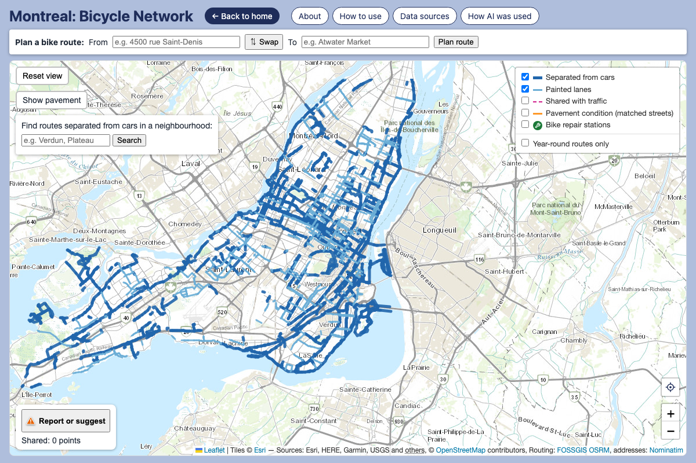

Find a calmer bike route across Montreal
New to cycling here, or new to the city? This map shows which of Montreal's 9,000+ bike-route segments are separated from traffic, which stay open in winter, and where the pavement is rough, so you can pick a route you're comfortable on.
Open the map → Free, no account needed. Works on your phone.
What you can do
-
Plan a route from A to B
Compare up to two routes by time, share separated from cars, share open year-round, and kilometres of rough pavement.
Type a start and end address at the top, then press Plan route.
-
See where you're separated from cars
Dark blue lines have a curb, barrier or separate path between you and cars. Search a neighbourhood to zoom to them.
Click any line for its type, borough and whether it's open year-round.
-
Find repairs and rough roads
Turn on bike repair stations and the city's pavement survey from the layer menu.
Use the layers button at the top right of the map.
-
Report what you see
Flag construction, a problem, or an idea. Reports are shared with everyone and are checked when routes are scored.
Press Report or suggest, then Add a point, then click the map.
Reading the map
- Thick dark blue: separated from cars (a curb, barrier or separate path; multi-use trails are shared with people walking)
- Light blue: painted lane, your own lane but only paint between you and cars
- Dashed pink: shared with traffic, no lane of your own (off at the start)
- Year-round routes only (checkbox in the layer menu): hides routes that close in winter
- Yellow to brown: pavement condition, from good to very poor (2024 city survey)
- Green wrench: public bike repair station
- Grey dots: bike collisions, 2017–2021 (bigger and darker means more serious). These are counts, not risk: a busy bike street can have more collisions without being more dangerous per trip.
Try it in 30 seconds
- Open the map and type 4500 rue Saint-Denis in From and Atwater Market in To.
- Press Plan route. The route most separated from cars is drawn first.
- Tap the other route buttons to compare. Is a few extra minutes worth more protection?
Good to know
Bike-route, pavement and collision data come from the City of Montréal open-data portal (CC BY 4.0; the collision reports are from the SAAQ and cover 2012 to 2021); repair stations, address search and routing come from OpenStreetMap. Pavement scores describe the street the lane runs on, not always the lane itself. What you type in the route boxes is sent to Photon (suggestions) and Nominatim (addresses), and the start and end points to OSRM to plan the route. If you choose My location as the start, your position is sent to OSRM too; Locate me on its own stays in your browser. The map remembers your last view and your saved places on this device.
Built for GEOG 464 at Concordia University, Fall 2026. Code and data on GitHub.